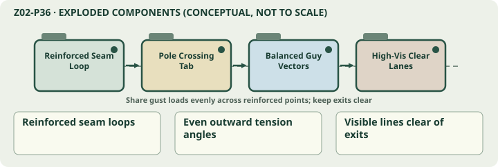

Z02-P36 · Shelter and housing · New manuscript
Distribute tension across guylines without overloading corners or tie-outs
Share wind loads across multiple reinforced attachment points rather than stressing a single fabric corner.
When it applies · Securing tents and tarps in open, breezy or storm-prone camps using manufacturer tie-out loops.
Equipment · High-visibility reflective guyline cord, line tensioners or adjustable hitches and suitable stakes.

Actions
- Attach guylines strictly to manufacturer-reinforced seam loops and pole-crossing tabs—never pinch unreinforced fabric panels that tear under gust loads.[E20, E16, ED]
- Set guyline angles cleanly outward along seam load lines and equalize tension across opposing sides so no single windward corner takes the full shock load.[E16, E20, ED]
- Use high-visibility cordage or mark lines clearly at walking routes so companions do not trip in the dark, snapping stakes or ripping seams.[E02, E20, ED]
Failure recognition · Guying out only one windward corner tightly while leaving pole-midpoints unguyed, snapping a flexed tent pole during a cross-gust.[E16, E20]
Verify · Walk around the shelter checking that all windward guylines share even tension, stay clear of exit paths and keep rainfly separated from inner walls.[E16, E20, ED]
Stop or change course · If gusts cause fabric seams to stretch noticeably or lines repeatedly slacken, lower exposure or move immediately to substantial shelter.[E16, E17]
Evidence and editorial notes
- E02 · NPS · Ten Essentials (current web edition)
- Section: Navigation; insulation; emergency shelter; emergency food and water · Conditions: Outdoor trips; adjust kit to season and route
Support: Carry essential systems including navigation, insulation, light, water and emergency shelter.
Limitations: Carrying items without practice or cold-weather verification does not ensure readiness. · Conflicting evidence: None; baseline kit system architecture.
Editorial note: Supports failure-mode packing and kit verification cards. · Specialist reviewer: Field education and search and rescue
Primary source · checked 2026-11-24 - E16 · NWS · Wind Safety (current web edition)
- Section: Wind Safety > High Wind Hazards · Conditions: Forecast or developing high winds, squalls, or straight-line winds
Support: High winds topple trees, loft debris, and stress lightweight shelters beyond fabric and anchor limits; relocate out of timbered fall zones and into substantial shelter before gusts peak.
Limitations: Tents and tarps lack standardized wind-speed survival guarantees across soil types and pitch angles. · Conflicting evidence: None; avoids unvalidated mph ratings for improvised pitches.
Editorial note: Drives high-wind shelter inspection, guying limits, and abandonment thresholds. · Specialist reviewer: Weather safety and shelter equipment
Primary source · checked 2026-11-24 - E17 · NWS · Tornado Safety (current web edition)
- Section: Tornado Safety > Staying Safe During a Tornado · Conditions: Tornado warning in camp, vehicle, or building
Support: Move to an interior lower-level room of a sturdy building if reachable; tents, mobile structures, and highway overpasses are unsafe; if caught outdoors with no sturdy shelter, monitor alerts early and follow NWS last-resort guidance.
Limitations: No outdoor improvised shelter is tornado-safe. · Conflicting evidence: None; reinforces early forecast withdrawal before severe storms arrive.
Editorial note: Establishes severe-storm abandonment threshold for camp shelters. · Specialist reviewer: Emergency management and meteorology
Primary source · checked 2026-11-24 - E20 · NPS · Camping: What to Bring (current web edition)
- Section: Camping: What to Bring > Shelter and Sleep System · Conditions: Overnight camping across three-season and cool conditions
Support: Match tent/tarp, groundsheet, sleeping pad, and sleeping bag ratings to expected night lows and precipitation; test pitching and inspect poles, zippers, and stakes before departure.
Limitations: Manufacturer comfort ratings assume dry insulation, ground pad use, and adequate caloric intake. · Conflicting evidence: None; reinforces pre-trip inspection and dry-sleep separation.
Editorial note: Anchors manufactured shelter selection, groundsheet fit, and gear readiness. · Specialist reviewer: Shelter equipment and field education
Primary source · checked 2026-11-24
Source lineage · NPS camping and NWS wind safety; new manuscript · Classification · New manuscript.